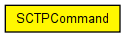
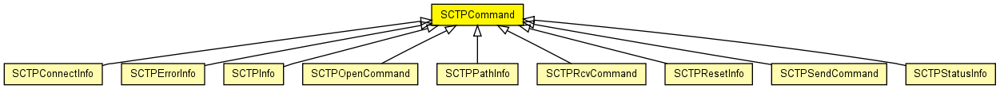

Control info for SCTP connections. This class is to be set as control info (see cMessage::setControlInfo()) on all messages exchanged between SCTP and application, in both directions. Some commands and indications (SCTP_C_OPEN_xxx, SCTP_I_STATUS) use subclasses.
connId identifies the connection locally within the application (internally, SCTP uses the (app gate index, connId) pair to identify the socket). connId is to be chosen by the application in the open command.
See also: TcpCommandCode, TcpStatusInd, SCTPOpenCommand, SCTPStatusInfo, SCTPMain
The following diagram shows usage relationships between types. Unresolved types are missing from the diagram. Click here to see the full picture.
The following diagram shows inheritance relationships for this type. Unresolved types are missing from the diagram. Click here to see the full picture.
| cPacket | (unknown -- not in documented files) |
| SCTPConnectInfo (class) |
Sent with message kind SCTP_I_ESTABLISHED, to let the app know about the local and remote IP address and port. |
| SCTPErrorInfo (class) |
Currently not in use. |
| SCTPInfo (class) | (no description) |
| SCTPOpenCommand (class) |
Control info to be used for active or passive SCTP open. |
| SCTPPathInfo (class) | (no description) |
| SCTPRcvCommand (class) | (no description) |
| SCTPResetInfo (class) | (no description) |
| SCTPSendCommand (class) |
Control info to be used with the SEND command. |
| SCTPStatusInfo (class) |
Sent with message kind SCTP_I_STATUS, in response to command SCTP_C_STATUS. For explanation of variables, see RFC 793 or SCTPStateVariables in SCTPConnection.h. |
| Name | Type | Description |
|---|---|---|
| sid | int | |
| assocId | int |
identifies the socket within the application |
| lifetime | double | |
| numMsgs | int | |
| ssn | int | |
| sendUnordered | unsigned short | |
| localAddr | IPvXAddress | |
| remoteAddr | IPvXAddress | |
| gate | int |
// // Control info for SCTP connections. This class is to be set as control info // (see cMessage::setControlInfo()) on all messages exchanged between SCTP and // application, in both directions. Some commands and indications // (SCTP_C_OPEN_xxx, SCTP_I_STATUS) use subclasses. // // connId identifies the connection locally within the application (internally, // SCTP uses the (app gate index, connId) pair to identify the socket). // connId is to be chosen by the application in the open command. // // @see TcpCommandCode, TcpStatusInd, SCTPOpenCommand, SCTPStatusInfo, SCTPMain // class SCTPCommand extends cPacket { int assocId = -1; // identifies the socket within the application int sid = -1; int numMsgs = 1; int ssn = -1; unsigned short sendUnordered = false; double lifetime = 0; IPvXAddress localAddr = IPvXAddress("0.0.0.0"); IPvXAddress remoteAddr = IPvXAddress("0.0.0.0"); int gate = -1; }